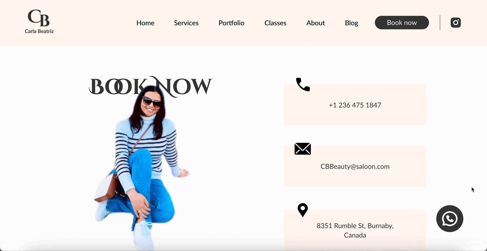
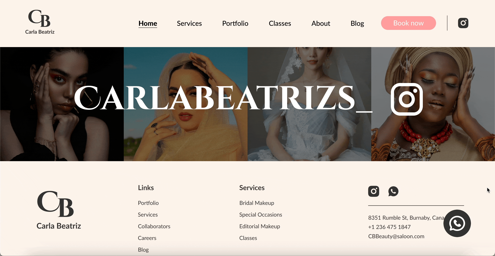
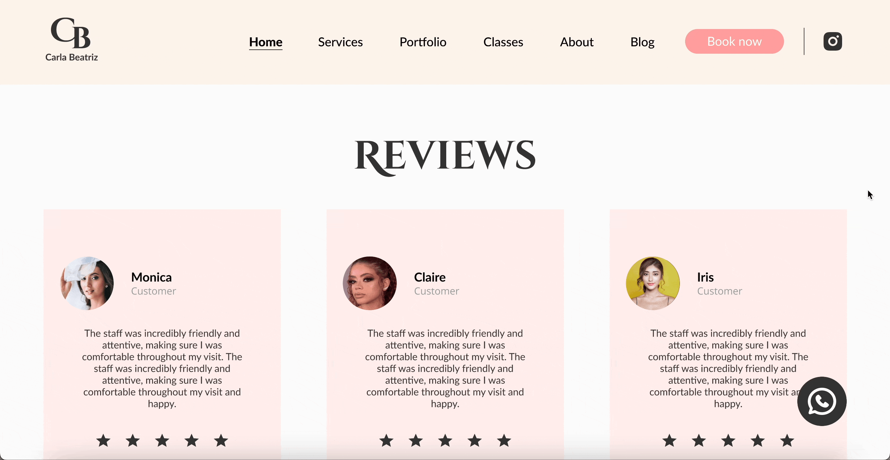

To Design a website for a Makeup Artist based in Canada
The objective of this project is to design a visually appealing and user-friendly website for CB Beauty - a makeup artist in Canada. The website aims to showcase the makeup artist’s services, make the enquiry process easy for the users, and increase brand awareness. The services she offers are Bridal Makeup, Special Occasion Makeup, Editorial, photographic and Makeup Classes and Workshops. The new design is currently under development process.
1. Present her portfolio and gallery for all the categories.

2. Simplify appointment scheduling through whatsapp floating CTAs instead of Contact Form.
3. Link Social media like instagram directly.
4. Highlight Successful client statistics.

5. Client testimonials.
6. Services and Packages lists.

Conducted usability tests and gathered feedback from users at a hair and nail salon and client to evaluate the effectiveness of the CB beauty website. Iteratively refined the design and functionality based on user insights and preferences.
This is a team project we made for a client in 2024. My role in UX was to conduct user interviews , I played a role in competitor analysis and simplifying appointment scheduling by adding whatsapp contact CTA and link social media directly. I also was responsible to design Home and Blog Sections and keep check of alienments through out all the pages.